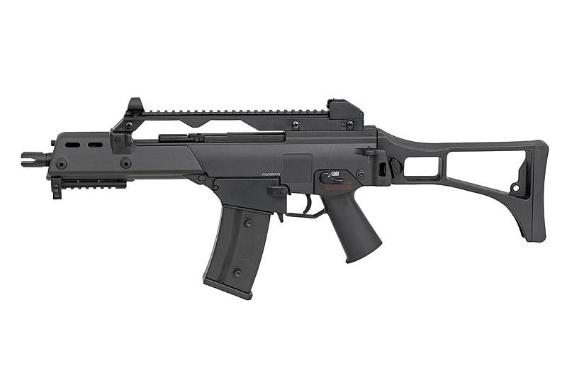

Airsoft
Airsoft is a team game in which participants eliminate opposing players by tagging them out of play with spherical plastic projectiles shot with mock air weapons called airsoft guns. Although similar to paintball in concept and gameplay, airsoft pellets do not leave visible markings on their target and hits are not always apparent. Though the pellets leave bruises or welts on exposed skin (and so protective gear is recommended), the game relies heavily on an honor system in which players who have been hit are expected to call themselves out.

Gear
The guns used in airsoft are typically classified as imitation firearms. They have a mechanism for shooting projectiles 6 mm in diameter.
